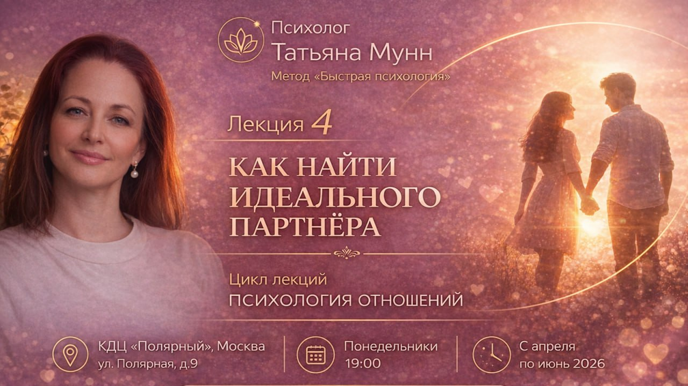

Лекции
Лекции по отношениям становятся публичной научной повесткой
Открытые встречи помогают переводить сложные темы в спокойный образовательный разговор.
ЧитатьВ этом разделе живут редакционные заметки о лекциях, встречах и открытых программах. Регистрация и расписание остаются в разделе мероприятий.
Открытые встречи помогают переводить сложные темы в спокойный образовательный разговор.
Читать
Редакционный взгляд на тему, которая соединяет психологию, образование и качество жизни.
Читать
Медиа не заменяет расписание: читатель может перейти к календарю и выбрать ближайшую встречу.
Открыть календарь